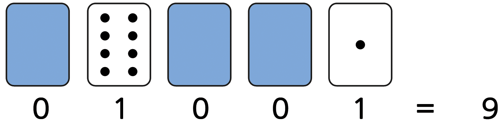
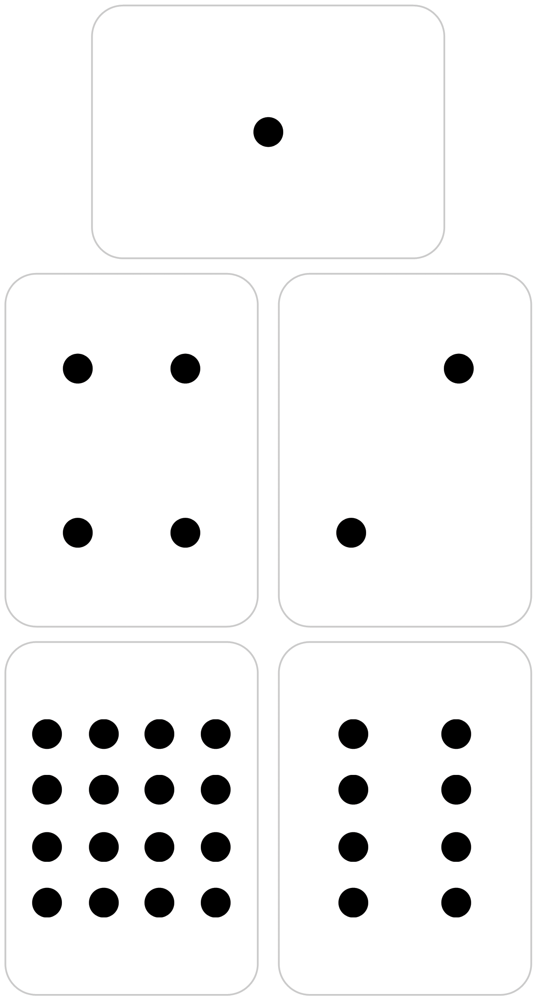
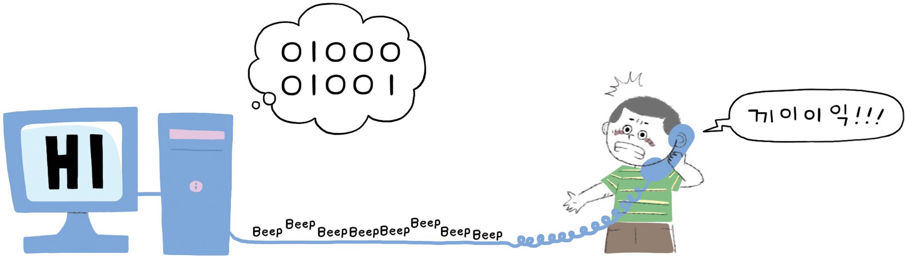
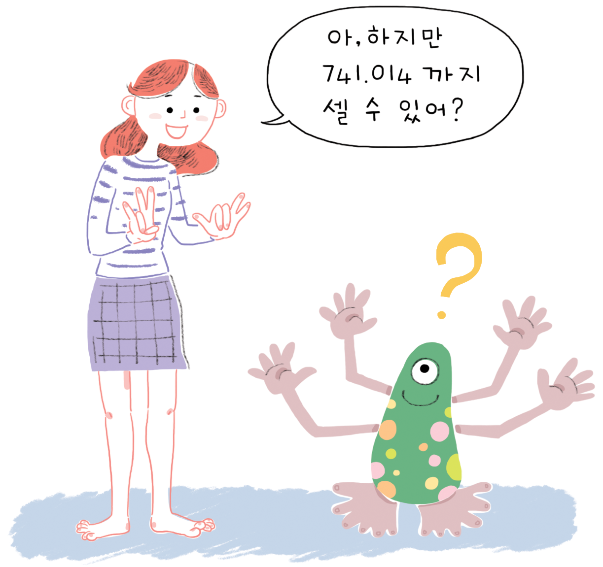
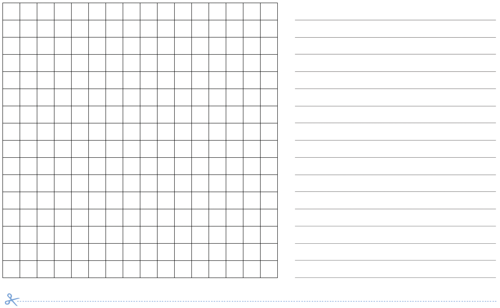
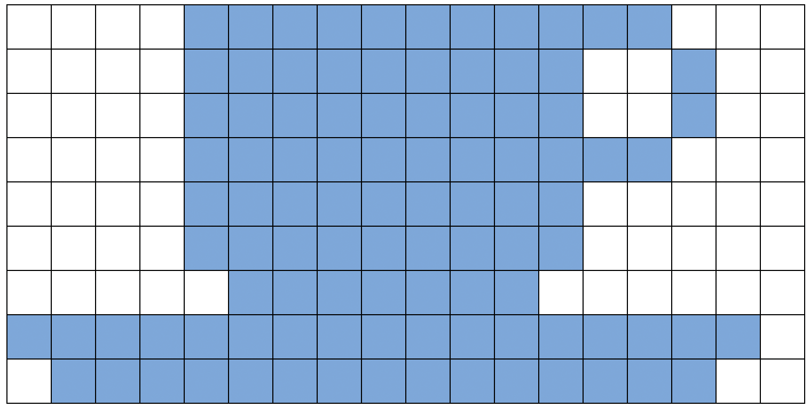
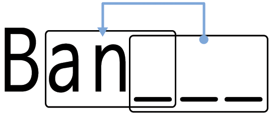
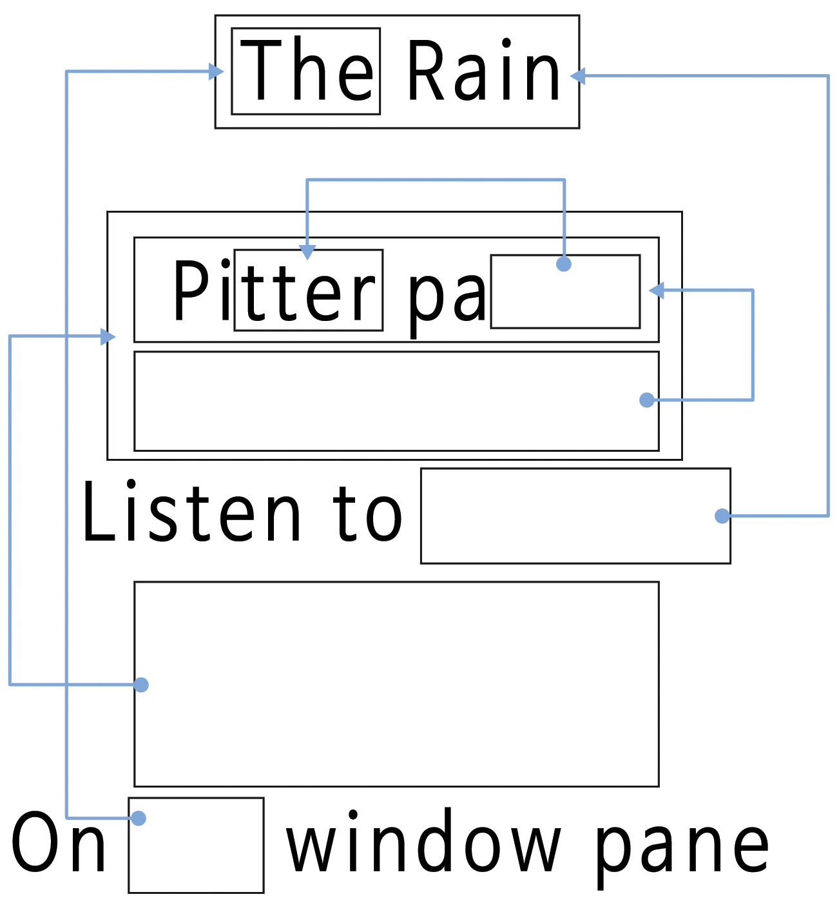

Chapter 1 제 1 부
정보를 나타내는 원재료 — 데이터
데이터: 정보를 나타내는 원재료
컴퓨터로 정보를 어떻게 저장할까요?
컴퓨터(Computer)라는 말은 라틴어 'computare'에 기원하는데 계산하고 더한다는 의미를 지니지만, 오늘날 컴퓨터는 거대한 계산기 이상이다. 컴퓨터는 도서관도 될 수 있으며, 컴퓨터로 글을 작성할 수 있으며, 정보를 찾고, 음악을 연주하고, 영화를 보기도 한다. 그런데 컴퓨터는 이렇게 많은 모든 정보를 어떻게 저장할까? 믿든 믿지 않든, 컴퓨터는 단지 두 가지만을 사용한다. 영('0')과 일('1')이다.
데이터와 정보의 차이는 무얼까?
데이터는 원재료, 즉 컴퓨터가 작업하는 숫자다. 컴퓨터는 여러분과 내가 이해할 수 있는 데이터를 정보(문자, 숫자, 그림)로 변환한다.
숫자, 글자, 단어, 그림이 어떻게 영('0')과 일('1')로 변환될까?
제 1부에서는 이진수(binary number)가 무엇인지, 컴퓨터가 어떻게 그림을 그리는지, 팩시밀리 송수신기가 어떻게 동작하고, 대량의 정보를 저장하는 효율적인 방법이 무엇인지, 오류가 생기는 것을 어떻게 막을 수 있는지, 그리고 저장하려는 정보의 양을 어떻게 측정되는지를 배울 것이다.
1.1 점의 개수를 세다 - 이진수 (Binary Number)
1.1 개요
컴퓨터의 데이터는 일련의 영과 일로 저장되고 전송된다. 단지 이 두 표식을 통해서 어떻게 언어와 숫자를 표현할 수 있을까?
1.1 교과학습 연계
- 수학: 숫자를 다른 진법으로 살펴보기. 이진법으로 숫자를 표현하기.
- 수학: 순열 패턴, 순열 패턴 규칙 기술하기. 이진법 패턴과 연관성
1.1 기술
- 계수 (Counting)
- 매칭 (Matching)
- 순서화 (Sequencing)
1.1 나이
- 7세 이상
1.1 학습 교재
- 이진 카드 5개가 데모용으로 필요합니다. 특히, A4 크기의 웃는 얼굴의 점 스티커 카드가 좋습니다.
- 아이마다 필요한 것
- 카드 5벌. 마스터 복사본: 카드에 이진수 표시된 자른 것
- 워크시트 학습: 이진수
- 필요에 따라 추가학습에 아이마다 필요한 것
- 워크시트 활동: 이진수 작업하기
- 워크시트 활동: 비밀 메시지 보내기
- 워크시트 활동: 팩스 기계와 모뎀
- 워크시트 활동: 31보다 큰 수 세기
- 워크시트 활동: 이진수 심화
1.1 언플러그드 활동 동영상
EBS 링크 동영상 언플러드그 동영상

1.1.1 이진수(Binary Numbers)
1.1.1.1 들어가며
워크쉬트를 나눠주기 전에, 전체 그룹에게 기본원리에 대해서 시범을 보여주는 것이 도움이 된다.
본 활동에서 아래와 같은 5장 카드 한 세트가 필요하다. 각각의 카드는 한 면에는 점을 반대면에는 아무것도 없다. 5명의 아이들을 골라서, 교실 앞으로 시범 카드를 나눠준다. 카드의 순서는 반듯이 다음과 같다.

1.1.1.2 토론
카드 위에 점(dot)의 개수에서 무엇을 알아챘나요? (카드 각각은 오른쪽에 있는 카드보다 점의 개수가 2배 많다.)
왼쪽으로 옮긴다면 다음 장의 카드는 점을 몇 개나 가질까요? (32) 그 다음은…… ?
카드를 몇장 뒤집고 앞면만 보이는 카드의 점을 더해서 숫자를 만들 수 있다. 아이들에게 숫자 6을 만들어 보도록 해보세요. (점 4개 카드와 점 2개 카드), 그리고 15를 만들고 (8점, 4점, 2점, 1점 카드), 그리고 21을 만들어 봅시다 (16점, 4점, 1점 > 카드).
이제 영에서부터 순서대로 수를 세어보자.
수업의 나머지 시간은 어떻게 카드가 변화하는지 자세히 살펴볼 필요가 있다. 카드를 뒤집는 방법에 패턴을 볼 수 있다. (각 카드를 뒤집으면 오른쪽 대비 절반이다.) 본 활동을 한 개 이상 그룹에서 확대해보자.
이진수 카드가 보이지 않을 때는 0 으로 표시한다. 이진수 카드가 보이면, 1 로 표시한다. 이것이 이진수 체계다.

01001을 아이들에게 만들어 보게 한다. 01001은 십진수로 무엇일까요? (9) 17은 이진수로 무엇일가요? (10001)
아이들이 개념을 이해할 때까지 몇 번 더 시도해 본다.
학습 강화를 위해 다섯 가지 선택가능한 확장 활동이 있고, 아이들이 할 수 있으면 확장 활동을 가지고 많이 연습할 수 있게 합니다.
1.1.2 워크시트 활동: 이진수(Binary Numbers)
1.1.2.1 계수(counting)하는 방법 배우기
여러분은 어떻게 계수 하는지 이제 안다고 생각합니다. 그런데 다음에 계수하는 새로운 방법이 있다.
컴퓨터가 단지 0 과 1 만을 사용한다는 사실을 알고 있습니까? 컴퓨터에서 보고 듣는 모든 것, 글, 그림, 숫자, 영화, 소리 조차도 단지 숫자 두개로 저장된다. 컴퓨터가 사용하는 정확히 동일한 방법으로 이번 활동을 통해서 비밀 메시지를 친구에게 보내는지를 여러분에게 알려줄 것이다.
1.1.2.2 따라하기 설명
종이에서 카드를 잘라내서 다음에 보여지듯이 왼쪽에 점 16개가 있는 카드부터 순서대로 차례로 놓으세요.
카드가 정확하게 동일한 순서로 놓여있는지를 확인하세요.
정확하게 점 5개가 보여지도록 카드를 뒤집으세요. 카드는 동일한 순서로 놓여져야 합니다.

3, 12, 19를 어떻게 만드는지 알아보자. 이들 숫자를 만들기 위한 하나 이상의 방법이 있을까요? 만들 수 있는 가장 큰 수는 무얼까요? 가장 작은 숫자는 무엇일까요? 가장 큰 수와 가장 작은 수 중에 만들 수 없는 숫자가 있나요?
응용문제: 1,2,3,4 숫자를 순서대로 만드세요. 숫자를 하나씩 증가시키기 위해 카드를 뒤집는 논리적인 믿을만한 방법을 찾을 수 있나요?
1.1.2.3 복사 마스터: 이진수

1.1.2.4 워크시트 활동: 이진수 계산
이진수 체계는 카드가 앞면인지 뒷면인지를 표현하는데 0과 1을 사용한다. 0은 카드 뒷면, 1은 점을 볼 수 있는 윗면이다. 예를 들어,
10101 이 무엇인지 풀 수 있나요? 11111 은 무엇일까요?
몇월 몇일 태어났나요? 이진수로 적어보세요. 친구 생일을 이진수로 무엇인지 알아보세요.
1.1.2.5 아래 기호를 숫자로 풀어보세요:

응용문제: 1,2,4,8,16 길이를 가진 줄(rope) 세트를 사용하여 31 단위까지 어떤 길이도 나타낼 수 있다는 것을 보여주세요. 서류가방이나 상자 같은 무거운 물건의 무게를 재기 위해서 균형저울과 무게추 몇개를 가지고 어떻게 무게를 잴 수 있는지 보이고 어른들을 놀래주세요.
1.1.3 워크시트 활동: 비밀 메시지 보내기
정훈이가 땡돌 땡돌 놀다가 그만 백화점 최고층에 갇혔다. 크리스마스 전날이고 선물을 가지고 무사히 집에 가고 싶었다. 정훈이는 무엇을 할 수 있을까? 전화도 시도해보고, 소리도 질러봤으나 주변에는 아무도 없었다. 길거리 반대편에 어떤 사람이 밤 늦도록 컴퓨터로 작업하고 있는 것을 봤다. 어떻게 그 사람의 관심을 끌 수 있을까? 정훈이는 주위를 둘러보고 할 수 있는 것을 찾아봤다. 그리고, 놀라운 아이디어가 떠올랐다—그녀에게 메시지를 보내기 위해서 크리스마스 트리의 전구를 사용하는 것이다. 주변의 전구를 모두 찾아 연결해서 전구를 켜거나 끌 수 있었다. 간단한 이진코드를 사용하는데 길 건너 여성분이 이진수를 이해한다고 확신했기 때문이다. 여러분도 할 수 있겠습니까?

1.1.4 워크시트 활동: 전자우편과 모뎀 {binary-number-modem}
모뎀으로 인터넷에 연결된 컴퓨터는 메시지를 보내기 위해서 이진수 체계를 사용합니다. 유일한 차이점은 비프음(beep)을 사용하는 것이다. 높은 비프음은 1, 낮은 비프음은 0이다. 이런 음조(tone)는 엄청 빨리 날아간다. 너무나 빨라서 우리가 듣게 되는 것은 끔찍하게 연속된 끼익 소리다. 만약 들은 적이 없다면, 인터넷에 연결된 모뎀소리에 귀 기울여 들어보세요. 혹은 팩시밀리의 신호음을 들어보세요—정보를 보내기 위해서 팩시밀리 기계도 모뎀을 사용합니다.

정훈이가 백화점에서 사용한 동일 신호를 사용해서, 친구에게 전자우편을 보내보세요. 친구와 여러분 모두 편안하게 해보세요—여러분이 모뎀처럼 빠를 필요는 없어요.

1.1.4.1 워크시트 활동: 31보다 큰 수 세기
이진 카드를 다시 보세요. 다음 카드를 나열된 순서(sequence)에서 만들려면, 얼마나 많은 점이 필요할까요? 그 다음 카드는 얼마나 많은 점이 필요할까요? 새로운 카드를 만들 때마다 여러분이 지켜야 하는 규칙은 무엇일까요? 보시다시피, 다음 큰 숫자를 만들기 위해서 단지 몇 장의 카드만 필요합니다.
주의 깊이 순서(sequence)를 살펴보면, 매우 흥미로운 관계를 발견하실 수 있습니다.
1.1.4.2 1, 2, 4, 8, 16, …
1, 2, 4를 더하면 1 + 2 + 4 = ? 얼마일까요?
1, 2, 4, 8을 더하면 1 + 2 + 4 + 8 = ?
처음부터 이들 숫자를 다 더하면 무슨 일이 생길까요?
“손가락을 걷게 한다”(‘’let your fingers do the walking’’?)는 표현을 들어봤나요? 손가락으로 계수를 하지만 10이상 셀 수는 없어요— 외계인이 될 필요는 없어요. 이진수 체계를 사용하고 손가락 각자가 카드를 나타낸다면 0에서31가지 셀 수 있어요. 즉 32개 숫자가 됩니다. (0도 숫자라는 것을 잊지 마세요.)
손가락을 사용해서 순서대로 수를 세보세요. 손가락을 치켜 세우면, 1을 나타내고, 손가락을 내리면 0을 나타냅니다.
만약 양쪽 손 모두 사용하면 0~1023까지 셀 수 있어요. 즉, 1024개의 숫자입니다.
여러분이 만약 잘 구부릴 수 있는 발가락을 가지고 있으면(이번에는 외계인이 되셔야 합니다.^^;) 더 많은 숫자를 셀 수 있어요. 한쪽 손이 32까지 셀 수 있고, 두 손으로 32*32=1024까지 셀 수 있어요. 플렉시양(Miss Flexi)의 발가락으로는 얼마나 큰 수를 셀 수 있나요?

1.1.5 워크시트 활동: 이진수 더 알아보기
- 이진수의 또 다른 흥미로운 특성은 0이 오른쪽 끝에 붙게 될 때 생긴다. 십진수의 경우, 0을 오른쪽 끝에 붙이게 되면 10을 곱한 결과가 된다. 예를 들어 9에 0을 > 붙이면 90이 되고, 30은 300이 된다.
하지만, 이진수의 오른쪽 끝에 0을 붙이면 무슨 일이 벌어질까? 다음을 시도해 보세요.

가설을 검증하기 위해 다른 것도 만들어 시도해 보세요. 무슨 규칙이 있을까요? 왜 이렇게 될까요?
- 지금까지 우리가 사용한 각 카드는 컴퓨터의 비트(bit)를 나타냅니다. (’bit’는 ‘binary digit’의 약자입니다.) 그래서 지금까지 여러분이 사용한 알파벳 > 기호는 단지 5개의 카드, 즉 비트를 사용해서 나타냈습니다. 하지만, 컴퓨터는 문자가 대문자인지 소문자인지를 알아야 하고 또한 자릿수, 구두점, $, ~ 같은 특수문자를 > 인지해야 합니다.
직접 눈으로 키보드를 살펴보고 컴퓨터가 얼마나 많은 문자를 표현해야 하는지를 살펴보세요. 모든 문자를 저장하기 위해서 컴퓨터는 얼마나 많은 비트를 필요로 할까요?
대부분의 컴퓨터는 아스키(ASCII, American Standard Code for Information Interchange, 정보교환 미국 표준 코드체계) 코드를 사용합니다. 아스키는 문자마다 별도의 비트를 사용하는 것을 기준으로 하고 있지만 비영어권 국가에서는 더 많은 코드를 사용합니다.

1.1.5.1 컴퓨터 과학 핵심 개념 {binary-number-lesson}
오늘날 컴퓨터는 정보를 표현하기 위해서 이진수 체계를 사용합니다. 단지 숫자가 두개만 사용되기 때문에 이진수 체계라고 불립니다. > 사람은 일반적으로 십진법(base 10)을 사용한데 반해 이진법(base 2)으로 알려져 있습니다. 0 과 1 각각은 비트(bit, binary digit)로 불립니다. 비트는 컴퓨터 > 주기억장치에 스위치가 온오프 상태의 트랜지스터나 충방전된 캐패시터로 표현됩니다.
전화선이나 무선 라디오를 통해서 데이터가 전송될 때, 고음과 저음 음조(tone)가 1과 0을 표현하기 위해서 사용됩니다. 자기 디스크(하드디스크나 플로피 디스크)나 테이프에서는 비트가 코팅된 표면에 자기력장 방향(북-남, 남-북)으로 표현됩니다.

오디오 CD, CD-ROM, DVD는 광학적으로 비트를 저장합니다. 비트 정보를 저장하는 표면은 빛을 반사하거나 하지 않습니다.
한 비트 자체는 많은 정보를 담을 수 없어 0~255까지 숫자를 표현할 수 있는 8개를 그룹으로 묶습니다. 비트 8개를 그룹으로 묶어 바이트(byte)라고 합니다.
컴퓨터 속도는 한번에 처리하는 비트의 숫자에 달려있다. 예를 들어, 32비트 컴퓨터는 한번의 연산으로 32비트의 숫자를 처리할 수 있고 16비트 컴퓨터는 32비트 숫자를 작은 조각으로 쪼개서 처리하게 되어 속도가 느리다.
궁극적으로 비트와 바이트는 컴퓨터가 숫자, 텍스트, 다른 종류의 정보를 저장하고 전송하기 위해서 사용하는 것이다. 앞으로 몇몇 활동에서 다른 종류의 정보를 어떻게 > 컴퓨터에서 표현되는지 학습하게 될 것입니다.

1.1.5.2 해답과 힌트 {binary-number-solution}
1.1.5.2.1 이진수
3 은 카드 2, 1
12 는 카드 8, 4
19 는 카드 16, 2, 1
어떤 숫자를 만들기 위해서 단 하나의 방법만 있다.
만들 수 있는 가장 큰 수는 31. 가장 작은 숫자는 0. 그 사이 모든 숫자를 만들 수 있고, 각 숫자를 표현하는 방법은 유일하다.
응용문제: 하나씩 숫자를 증가시키려면, 모든 카드가 윗면이 될 때까지 오른쪽부터 왼쪽까지 모든 카드를 뒤집는 것이다.
1.1.5.2.2 이진수 계산
10101 = 21, 11111 = 31
1.1.5.2.3 비밀 메시지 보내기
해독된 메시지: HELP IM TRAPPED
1.1.5.2.4 31보다 큰 수 세기
처음부터 숫자를 더한다면, 합계는 항상 급수열의 다음 숫자보다 1 이 작은 수가 된다.
플레시 양의 발가락은 1024 × 1024 = 1,048,576, 즉 0 부터 1,048,575 까지
1.1.5.2.5 이진수 더 알아보기
오른쪽 끝에 0을 놓게 되면, 숫자는 항상 배수가 된다.
1을 포함하는 모든 장소는 이전 값의 배수가 된다. 그래서 총수는 배수가 된다. (10진수의 경우 0을 오른쪽 끝에 놓게 되면 10을 곱한 결과가 된다.)
컴퓨터는 모든 문자를 저장하기 위해서 7 비트가 필요하다. 128 문자까지 가능하다. 일반적으로 1 바이트 8비트에 7 비트가 저장되고 1 비트는 버려진다.
1.2 숫자로 색깔 표현하기 - 이미지 표현
1.2 개요
컴퓨터는 습작물, 사진, 그림을 저장하는데 단지 숫자만을 사용한다. 다음의 활동은 컴퓨터가 어떻게 이러한 작업을 하는지를 보여준다.
1.2 교과학습 연계
- 수학: 기하학 레벨 2 이상. 모양과 공간 탐색.
1.2 기술
- 계수 (Counting)
- 도식화 (Graphing): 평면을 사각형의 격자로 잘게 나누어 채색하여 그림으로 > 표현
1.2 나이
- 7세 이상
1.2 학습 교재
- OHP 마스터에서 복사한 OHP 시트: 숫자로 색깔 표현하기
- 아이마다 필요한 것
– 워크시트 활동: 어린이 팩스 – 워크시트 활동: 자신만의 사진 만들기
1.2.1 언플러그드 활동 동영상
| 한글 동영상 | 영어 동영상 |
|---|---|
| 애타게 찾고 있습니다. |
1.2.2 숫자로 색깔 표현하기
1.2.2.1 들어가며
1.2.2.2 토의 질문
- 팩시밀리 기계(팩스, fax)는 무슨 일을 하나요?
- 컴퓨터가 어떤 상황에서 그림을 저장할 필요가 있나요? (그림을 그리는 프로그램, 그래픽 게임, 멀티미디어 시스템)
- 컴퓨터는 숫자만 사용할 수 있는데 어떻게 그림을 저장할까요?
(학습 활동을 위해서 아이들이 팩시밀리를 사용하여 메시지를 주고 받게 준비하는 것도 좋습니다.)
1.2.2.3 OHP 시트를 사용한 시연
컴퓨터 화면(computer screen)은 픽셀(pixels, picture elements)로 > 불리는 작은 점들의 격자로 나눠져 다.
흑백 그림에서 각 픽셀은 검은색이거나 하얀색이 된다.
문자 “a”를 확대해서 픽셀을 살펴보자. 컴퓨터가 그림을 저장할 때, 필요한 전부는 어느 점이 검은색이고, 어느 점이 > 흰색인가하는 정보다.
위 그림은 문자 “a” 그림이 어떻게 숫자로 표현되는지를 보여준다. 첫 번째 줄은 > 하얀 픽셀 하나, 검은 픽셀 세 개, 시 하얀 픽셀 하나다. 그래서 첫 줄은 > 1,3,1로 표현된다.
첫 번째 숫자는 항상 하얀 픽셀과 관계된다. 만약 첫 번째 픽셀이 검정색이면, 첫 > 번째 줄은 0으로 시작한다.
17 쪽의 연습문제에는 방금 전에 보여준 방법을 활용하여 아이들이 복호화(decode)> 할 그림이 있습니다.
1.2.2.4 복사 마스터: 숫자로 색깔 표현하기

< 컴퓨터 화면에 보이는 “a” 문자. 문자 이미지“a”를 픽셀이 보이도록 확대한 뷰(view) >
< “동일한 이미지를 숫자 코드(code)로 표현한 것” >
< “공백 격자 그리드(grid) (교수 목적 제공)” >
1.2.3 워크시트 활동: 어린이 팩시밀리
첫 번째 그림이 가장 쉽고, 마지막 그림이 가장 복잡하다. 실수하기 쉬워서 색칠할 연필과 지우개를 사용하기를 권한다.


1.2.4 워크시트 활동: 자신만의 그림을 그리자
이제 숫자가 그림을 어떻게 표현하는지를 배웠습니다. 친구를 위해서 여러분이 직접 그림을 만들어 보세요. 위쪽 격자 그리드에 그림을 그리고, 다 그렸으면 아래쪽 격자 그리드 옆에 숫자로 코드를 적으세요. 점선을 따라서 자르고, 아래쪽 격자 그리드를 친구가 색칠하도록 전달해 주세요. (노트: 원치 않으면 전체 격자 그리드를 모두 사용하지 않아도 됩니다. 그림이 격자 전체를 차지하지 않는다면, 아래 몇몇 줄을 공백 상태로 두세요.)

- 아래를 절취하세요
1.2.5 워크시트 활동: 자신만의 그림을 그리자 (심화문제)
심화문제: 채색된 이미지를 표현하려면, 색깔을 표현하는 숫자를 사용한다. (예, 0 은 검정, 1 은 빨강, 2 는 녹색 등) 두 숫자로 픽셀을 표시한다: 첫 번째 숫자는 전에 표기한 것과 같고 두 번째 숫자가 색깔을 표시한다. 친구를 위해 색깔 그림을 만들어 보세요. 각 숫자가 무슨 색깔을 의미하는지를 사전에 친구에게 알려주는 것을 잊지 마세요.
- 아래를 절취하세요
1.2.5.1 변형과 확장
- 격자 위에 종이에 그려보세요. 최종 이미지를 격자 그리드 없이 볼 수 있게 해보세요. 이미지가 훨씬 더 선명해 니다.
- 격자 그리드에 색깔을 칠하는 대신에 좀더 커다란 격자 그리드 위에 아이들이 사각형 스티커 종이를 사용하거나 체를 놓을 수도 있어요.
1.2.5.2 토의 점
길이가 이진수로 표현되기 때문에, 픽셀 길이에 제한이 있는 것이 보통입니다.
만약 7 까지만 숫자를 사용할 수 있는데, 어떻게 12 개 검정 픽셀을 표현할 수 있을까요? (좋은 방법은 일련의 7 개 검정 픽셀, 0 개 하얀색 픽셀, 그리고 일련의 5개 검정 픽셀로 표현하는 것입니다.)
1.2.6 컴퓨터 과학 핵심 개념
팩시밀리 기계는 흑백 종이를 약 1000 × 2000 픽셀로 스캔해서 모뎀을 사용하여 다른 팩시밀리 기계에 보내는 정말 단순한 컴퓨터다. 다른 팩시밀리 기계는 전송 받은 픽셀을 종이에 출력한다. 종종, 팩스 이미지가 넓은 흰 공백(예, 한계(margin)) 혹은 검은 픽셀 (예, 가로줄)을 가지고 있다. 색깔 있는 그림은 훨씬 더 많은 중복이 있다. 이런 이미지를 저장하려고 필요한 많은 저장공간을 절약하기 위해서, 프로그래머는 다양한 압축 기술을 사용한다. 여기서 사용되는 방법은 “런 길이 부호화(run-length coding)”로 불리고, 이미지를 압축하는 효과적인 방법이다. 이미지를 압축하지 않으면, 사진을 보내는데 오랜 시간이 걸리고 추가로 더 많은 저장공간이 필요하다. 따라서, 웹페이지에 사진을 게시하거나 팩스를 보내는 것이 가능하지 않을 수 있다. 예를 들어, 팩스 이미지는 일반적으로 원본 크기의 7 분의 1 로 압축된다. 압축 없이 전송하는데는 7 배 많은 시간이 걸린다.
사진과 그림은 다양한 압축기법을 사용하여 원본의 10분의 1, 혹은 100분의 1의 크기로 압축된다. 이렇게 압축해서 더 많은 이미지를 동일한 디스크에 저장할 수 있고, 인터넷을 통해서 사진과 그림을 보는데 짧은 시간내에 볼 수 있다는 의미가 된다.
프로그래머는 적절한 압축 기법을 선택해서 이미지를 전송할 수 있다.

1.2.7 해답과 힌트
1.2.7.1 어린이 팩시밀리 워크시트 정답



1.3 다시 말할 수 있어요! - 텍스트 압축
1.3 개요
컴퓨터가 정보를 저장하기 위한 공간에는 한계가 있어서, 가능하면 효율적으로 정보를 표현할 필요가 있다. 이 방법을 “압축”(compression)이라고 한다. 저장하기 전에 데이터를 부호화(coding)하고 정보를 끌어낼 때는 복호화(decoding)해서, 컴퓨터에 더 많은 데이터를 저장하고 인터넷을 통해서 더 빨리 보낼 수 있게 한다.
1.3 교과학습 연계
- 영어: 단어와 텍스트 패턴 인식
- 기술: 기술 지식과 이해. 컴퓨터 작동원리
1.3 기술
글로 쓴 텍스트 복사
1.3 나이
- 9세 이상
1.3 학습 교재
- OHP 마스터에서 복사한 OHP 시트: 다시 말할 수 있어요!
- 아이마다 필요한 것
– 워크시트 활동: 다시 말하기! – 워크시트 활동: 심화 문제 – 워크시트 활동: 짧고 간결하게 – 워크시트 활동: 심화 문제 (상급자)
1.3.1 언플러그드 활동 동영상
| EBS 링크 동영상 | 영어 동영상 |
|---|---|
 |
1.3.2 다시 말할 수 있어요!
1.3.2.1 들어가며
컴퓨터는 많은 데이터를 저장하고 전송해야 합니다. 그래서 너무 많은 저장 공간을 사용하거나, 네트워크를 통해 정보를 보내는데 시간이 오래 걸리면 안돼서, 텍스트를 다음과 같이 압축합니다.
1.3.2.2 시연 및 토론
“비(rain)” OHP 로 보여주세요. 다음 시(poem)에서 문자 패턴을 찾아보세요. 반복되는 2 개 이상의 문자, 단어, 문구를 찾을 수 있나요? (아래 도식에서처럼 박스를 채워넣으세요, 참고. pitter patter 타닥타닥 소리)

1.3.2.2 복사 마스터: 다시 말할 수 있어요!
- Rain: 비
- pitter patter: 빗소리
- Listen to:귀 기울여 듣다
- window pane: 창유리

1.3.2.2 복사 마스터: 다시 말할 수 있어요!
다음 시에서 많은 단어와 글자가 빠져있습니다. 여러분이 빠진 단어와 글자를 채워 넣어 온전한 시가 될 수 있도록 만들어 주세요. 화살표가 가리키는 박스에서 채워 넣을 단어와 글자를 찾을 수 있습니다.
이제 간단한 시나 동요를 골라서 여러분 자신만의 퍼즐을 만들어보세요. 여러분이 만든 화살표가 항상 이전 텍스트 부분을 가리키는지를 꼭 확인하세요. 우리가 읽는 동일한 방식으로 여러분의 시는 왼쪽에서 오른쪽으로 위에서 아래로 복호화할 수 있어야 합니다.
1.3.2.2 도전문제 : 여러분이 얼마나 적은 단어를 필요로 하는지 살펴보세요.
제안: “Three Blind Mice”, “Mary Mary Quite Contrary”, “Hickory Dickory Dock” 혹은 Dr Seuss 책도 시도해 보세요.
힌트: 너무나 많은 화살표를 피하세요. 글을 써가면서, 글자와 단어 주변에 많은 공백을 둬서 박스 내부와 이를 가리키는 화살표 사이에 박스를 위한 공간을 확보하세요.
시를 먼저 쓰고 나서 박스를 어디에 위치할지를 결정한다면 퍼즐 설계가 훨씬 쉬워요.

1.3.3 워크시트 활동: 심화 문제
이 퍼즐을 어떻게 풀 수 있나요?

가끔 빠진 텍스트가 자기 자신의 일부를 가리킵니다. 이런 경우 글자가 왼쪽부터 오른쪽으로 복사된다면 올바르게 복호화됩니다. 필요하기 전에 각 문자가 복사되어 사용가능해집니다. 특별히 긴 순서의 문자나 패턴있다면, 컴퓨터에서 유용합니다.
여러분 자신만의 그림을 몇개 그려보세요.
컴퓨터에 박스와 화살표는 숫자로 나타납니다. 예를 들어,
Banana
Ban_ _ _
“3”은 연속된 3 개 문자 복사를 뜻합니다.
Ban_ _
Banan_
Banana

숫자 두 개가 단어를 복호화하는데 사용되었는데, 대체로 둘 혹은 이상의 문자 그룹만을 사용할 때 압축에 효과가 있습니다. 그렇지 않은 경우 공간이 절약되지 못합니다. 사실, 숫자 두개를 사용하여 한 문자를 부호화한다면 파일 크기는 올라갈 수 있어요.
컴퓨터가 압축하는 방식과 동일하게 자신만의 단어 몇개를 만드세요. 여러분의 친구가 복호화할 수 있을까요?
1.3.4 워크시트 활동: 짧고 간결하게
1.3.4.1 여러분은 여기에서 얼마나 많은 단어를 필요로 하나요?
여러분 자신을 가능한 많은 정보를 디스크에 저장하려고 하는 컴퓨터라고 가정해봅시다. 이미 앞에서 나온 두개 이상의 문자 그룹을 선을 그어 지우세요. 포인터로 대체될테니 이들은 더 이상 필요하지 않아요. 목적은 가능한 많은 문자를 줄을 그어 지우는 것입니다.
I know an old lady who swallowed a bird
How absurd! She swallowed a bird!
She swallowed the bird to catch the spider
That wriggled and jiggled and tickled inside her
She swallowed the spider to catch the fly
I don’t know why she swallowed a fly
Perhaps she’ll die…
1.3.5 워크시트 활동: 심화 문제 (상급자) {text-compression-worksheet-advanced}
1.3.5.1 정말로 어려운 압축에 도전할 준비가 되셨나요?
아래 이야기에 대해 컴퓨터 프로그램을 실행하여 1,633 문자가 줄을 그어 지워질 수 있다는 것을 확인했다. 여러분은 얼마나 많이 찾아 지울 수 있나요? 단지, 두개 이상의 반복되는 문자만을 줄을 그어 제거할 수 있다는 것을 기억하세요. 행운을 빕니다.
Once upon a time, long, long ago, three little pigs set out to make their fortunes. The first little pig wasn’t very clever, and decided to build his house out > of straw, because it was cheap. The second little pig wasn’t very clever either, and decided to build his house out of sticks, for the “natural” look that was > so very much in fashion, even in those days. The third little pig was much smarter than his two brothers, and bought a load of bricks in a nearby town, with which > to construct a sturdy but comfortable country home.
Not long after his housewarming party, the first little pig was curled up in a chair reading a book, when there came a knock at the door. It was the big bad wolf, > naturally.
“Little pig, little pig, let me come in!” cried the wolf.
“Not by the hair on my chinny-chin-chin!” squealed the first little pig.
“Then I’ll huff, and I’ll puff, and I’ll blow your house down!” roared the wolf, and he did huff, and he did puff, and the house soon collapsed. The first > little pig ran as fast as he could to the house of sticks, and was soon safe inside. But it wasn’t long before the wolf came calling again.
“Little pig, little pig, let me come in!” cried the wolf.
“Not by the hair on my chinny-chin-chin!” squealed the second little pig.
“Then I’ll huff, and I’ll puff, and I’ll blow your house down!” roared the wolf, and he did huff, and he did puff, and the house was soon so much firewood. > The two terrified little pigs ran all the way to their brother’s brick house, but the wolf was hot on their heels, and soon he was on the doorstep.
“Little pig, little pig, let me come in!” cried the wolf.
“Not by the hair on my chinny-chin-chin!” squealed the third little pig.
“Then I’ll huff, and I’ll puff, and I’ll blow your house down!” roared the wolf, and he huffed, and he puffed, and he huffed some more, but of course, the > house was built of brick, and the wolf was soon out of breath. Then he had an idea. The chimney! He clambered up a handy oak tree onto the roof, only to find that > there was no chimney, because the third little pig, being conscious of the environment, had installed electric heating. In his frustration, the wolf slipped and > fell off the roof, breaking his left leg, and severely injuring his pride. As he limped away, the pigs laughed, and remarked how much more sensible it was to live > in the city, where the only wolves were in the zoo. And so that is what they did, and of course they all lived happily ever after.
1.3.6 컴퓨터 과학 핵심 개념
컴퓨터 저장용량은 믿기 힘든 속도로 빠르게 늘어나고 있다. 지난 25년간 일반인들이 사용하는 컴퓨터 저장용량은 백만 배 늘어났다. 하지만, 컴퓨터에 저장할 더 많은 것이 있다. 컴퓨터는 책 전체를 저장할 수 있고, 심지어 도서관의 모든 책, 음악, 영화도 저장공간만 허락된다면 저장할 수 있다. 큰 파일은 다운로드 하는데 긴 시간이 걸려서 인터넷에서도 골치거리다. 또한, 컴퓨터를 점점 더 소형화 하여 스마트폰과 스마트워치에 좀더 많은 정보가 저장되길 기대한다.
하지만, 이 문제에 해결책은 있다. 더 많은 저장 공간이나 더 빠른 네트워크를 구축하는 대신에, 데이터를 *압축해서** 적은 공간을 차지하도록 할 수 있다. 데이터를 압축하고 압축을 푸는 과정은 컴퓨터가 자동으로 해준다. 아프로 디스크는 점점 더 많은 정보를 저장하게 되고, 웹페이지는 더 빨리 화면에 정보를 뿌려주지만, 실제로 컴퓨터가 더 많은 연산처리를 한다는 것에 주목해야 한다.
많은 압축기법이 발명되었다. 이 활동에 사용된 방법이면서, 먼저 출현한 텍스트를 가리키는 원칙을 가진 압축기법은 1970년대 두명의 이스라엘 교수님이 발명하신 ‘Ziv-> Lempel coding,’ 줄여서 ‘LZ coding’ 이라고 한다. 이 방법은 어떤 언어에도 사용될 수 있는 범용성이 있고, 쉽게 데이터 크기를 반으로 압축할 수도 있다. 개인용 컴퓨터의 zip 파일을 지칭하기도 하고, GIF 이미지, 초고속 모뎀에도 사용된다. 모뎀의 경우 전화선을 통해서 전송에 필요한 데이터 양을 줄여 더 빨리 데이터가 > 전송이 되도록 한다.
더 많이 출현하는 문자가 다른 것보다 짧은 부호를 가져야 한다는 아이디어에 기초한 다른 방법도 있다. 모스 부호(Morse code)가 이러한 아이디어를 차용했다.
1.3.7 해답과 힌트
1.3.7.1 다시 말할 수 있어요! (복사 마스터)

1.3.7.2 다시 말할 수 있어요!
Pease porridge hot,
Pease porridge cold,
Pease porridge in the pot,
Nine days old.
Some like it hot,
Some like it cold,
Some like it in the pot,
Nine days old.
1.4 카드 뒤집기 마술 - 오류 탐지 및 수정
1.4 개요
데이터가 컴퓨터 디스크에 저장되거나 A 컴퓨터에서 B 컴퓨터로 데이터가 전송될 때, 보통 데이터처리할 때 변경될 것이라고 생각하지는 않는다. 하지만 때때로 데이터에 오류가 발생하고, 우연히 데이터 변경이 일어나기도 한다. 이번 활동은 마술을 사용해서 손상된 데이터를 어떻게 탐지하고 오류난 데이터를 어떻게 교정하는지 익힐 것입니다.
1.4 교과학습 연계
- 수학: 정수론 레벨 3 이상. 연산과 추정 탐색
- 대수 레벨 3 이상. 패턴과 관계 탐색
1.4 기술
- 계수 (counting)
- 짝수와 홀수 인식
1.4 나이
- 9세 이상
1.4 학습 교재
- 한쪽 면만 색칠된 냉장고 자석 36개 한 벌
- 시연을 위해서 자석이 붙을 수 있는 금속판 (화이트보드 추천)
아이 한 쌍이 필요한 것- 한쪽 면만 색칠된 똑같은 카드 36개
1.4 언플러그드 활동 동영상
EBS 링크 동영상 영어 동영상

1.4.1 마술
1.4.1.1 시연
마술사가 될 기회가 있어요.
동일한 양면 카드가 필요합니다. (한쪽 면만 색칠된 커다란 종이를 자르세요) 한쪽 면만 색칠된 평평한 냉장고 자석 카드를 사용하기가 시연 목적으로 좋습니다.
- 다음과 같이 5 × 5 정사각형에 임의로 앞뒤가 뒤섞인 카드를 놓을 어린이를 고르세요.

“조금 더 어렵게 만들도록” 추가로 행(row)과 열(column)을 덧붙이세요.

추가되는 카드들이 묘기의 가장 중요한 요소입니다. 추가되는 카드를 골라서 각 행과 열에 짝수 색깔 카드가 될 수 있도록 맞춥니다.
- 선생님이 눈을 감고 있는 동안 아이에게 카드 하나를 뒤집게 합니다. 바뀐 카드를 가진 행과 열은 이제 홀수개의 색깔 카드를 가지게 되어서 바뀐 카드를 쉽게 찾을 수 > 있습니다.
묘기가 어떻게 수행되었는지 아이들이 추론할 수 있을까요?
1.4.1.2 아이들에게 묘기 설명하기:
- 둘이 짝이 되어서, 어린이들이 5 × 5 카드를 자리에 놓습니다.
- 각 행과 열에는 얼마나 많은 색칠된 카드가 있나요? 짝수인가요, 홀수인가요? 기억하세요 0은 짝수입니다.
- 이제 각 행에 6번째 카드를 추가하는데, 색칠 카드가 항상 짝수가 되도록 합니다. 이 추가 카드를 패리터(parity) 카드라고 합니다.
- 아래쪽을 따라서 6번째 카드 행을 추가하는데, 각 열의 색칠 카드의 수가 짝수가 되도록 합니다.
- 이제 카드를 한 장 뒤집습니다. 행과 열에서 무엇을 눈치채셨습니까? (색칠 카드의 수가 홀수가 됩니다.) 패리티 카드는 언제 오류가 발생했는지를 보여주기 위해 > 사용됩니다.
- 이제 순서를 바꿔서 ‘묘기’를 부려봅시다.
1.4.1.3 확장 활동
- 다른 물체를 사용해 봅시다. 두 개의 상태를 가진 어떤 것도 무방합니다. 예를 들어, 가지고 노는 카드, 동전(앞뒷면), 이진수 체계와 연관되도록 과 0과 1로 인쇄된 > 카드도 됩니다.
- 만약 두개 혹은 그 이상의 카드가 뒤집어진다면 무슨 일이 생길까요? (어떤 것이 변경되었다는 것을 말할 수 있지만, 정확하게 어느 두 장의 카드가 뒤집혔는지를 꼭 > 집어서 말하는 것은 항상 가능하지는 않습니다. 통상 두 짝의 카드 중에 하나로 범위를 좁힐 수 있습니다. 4장이 뒤집히는 경우, 나중의 모든 패리티 비트가 정상일 수 > 있어서 오류가 탐지되지 않고 그냥 지나칠 수 있습니다.)
- 다른 흥미로운 카드놀이 연습은 오른쪽 아래 카드를 생각해 보는 것이다. 위쪽 열에 대해서 올바른 것을 고른다면, 왼쪽 행에 대해서도 그럴까요? (답은 항상 그렇다 > 입니다.)
- 이 카드놀이 연습에서는 짝수 색칠 카드를 사용하여 짝수 패리티(even parity)를 사용했다. 홀수 패리티(odd parity)로도 할 수 있을까? (가능하지만, 만약 행과 열의 > 숫자가 모두 짝수이거나 홀수이면, 오른쪽 아래 카드는 행과 열에 대해서 같다. 예를 들어, 5 × 9 나 4 × 6 배치는 작동하지만, 3 × 4 배치는 작동하지 않는다.)
1.4.2 오류 검사의 실사례 — ISBN 코드
동일한 검증 기법이 책코드에도 사용된다. 출판된 책은 책 뒷면에 10 자리 코드가 있다. 10 번째 자릿수는 검증 자리수로 카드놀이 연습에서 살펴본 패리티 비트(parity bit) 같은 것이다.
ISBN (International Standard Book Number)을 사용한 책을 주문한다면, 출판사는 오류가 있는지 점검을 한다는 의미가 됩니다. 출판사는 간단히 체크썸(checksum)을 살펴볼 것입니다. 이와 같은 방식으로 여러분은 잘못된 책을 기다리다 끝나지 않게 됩니다.
다음에 체크썸을 해결하는 방법이 있습니다.
첫째 자리는 10 을, 둘째 자리는 9 를, 셋째 자리는 8 을, 계속해서 내려가서, 아홉번째 자리는 2 를 곱한다. 그리고는 이들 각 값을 하나이 값으로 합친다.
예를 들어, ISBN 0-13-911991-4 는 다음과 같다.
(0 × 10) + (1 × 9) + (3 × 8) + (9 × 7) + (1 × 6) + (1 × 5) + (9 × 4) + (9 × 3) + (1 × 2) = 172 그리고 이 값을 11 로 나눈다. 나머지는 무엇일까?
172 ÷ 11 = 몫 15 나머지 7만약 나머지가 0 이면, 체크썸은 0 이다. 그렇지 않은 경우 11 에서 나머지를 빼서 체크썸을 얻는다.
11 – 7 = 4다시 돌아가서, 이 숫자가 ISBN 의 마지막 숫자인가? 예 맞습니다.
ISBN 의 마지막 숫자가 4 가 아니라면, 뭔가 잘못된 것을 알 수 있다.
10 을 체크썸 값으로 가지는 것도 가능하다. 이 경우 한 자릿수를 추가로 필요로 한다. 이것이 생겼을 경우, X 문자가 사용된다.

검증 자릿수를 사용하는 또 다른 사례는 식료 잡화품에 붙어있는 바코드(bar code)다. 바코드는 다른 공식을 사용한다. 만약 바코드가 잘못 읽힌다면, 마지막 자릿수는 계산된 값과 달라야 한다. 이런 경우가 발생하면, 스캐너는 삑 소리를 내고, 계산원은 바코드를 다시 스캔한다.
1.4.3 항상 체크썸은 맞을까?
때때로 오류가 생깁니다.
흔한 오류는 다음과 같습니다.
- 숫자의 값이 변합니다.
- 두 인접한 숫자가 서로 뒤바뀝니다.
- 숫자가 중간에 삽입됩니다.
- 숫자가 빠져버립니다.
체크썸 10 자리 문자 X 가 표기된 책을 찾을 수 있나요? 발견하기 어렵지 않을 것입니다. 모두 11 자리 중에 1 자리는 X 를 가져야 하기 때문입니다.
탐지하기 어려운 오류는 어떤 것이 있을까요? 체크썸 값을 바꾸지 않고 숫자를 바꿀 수 있나요? 두 숫자가 바뀐다면 어떨까요? (흔한 컴퓨터 타이핑 오류)
1.4.4 컴퓨터 과학 핵심 개념
10 달러 현찰을 은행에 예금한다고 가정해 봅시다. 은행 창구 직원이 예치금을 컴퓨터에 타이핑하면 입력된 정보는 중앙 컴퓨터로 전송됩니다. 하지만, 예치금이 전송되는 동안에 회선에 장애가 발생했서 10 달러에 대한 코드값이 1,000 달러로 바뀌었다고 생각해 봅시다. 고객인 여러분의 입장에서는 문제가 아니지만, > 분명 은행에게는 심각한 문제입니다.
전송된 데이터에 오류가 있는지 탐지하는 것은 중요합니다. 그래서 정보를 수신하는 컴퓨터는 데이터가 회선에 전자기적 간섭에 의해서 손상되었는지를 검증할 필요가 있습니다. 때때로, 오류도 함께 전송된 경우에는 원본 데이터를 다시 보낼 수도 있습니다. 하지만, 만약 물리적, 열, 자기적 혹은 전기적 방사선에 노출되어 손상된 경우 다시 전송하는 것이 여의치 못한 경우도 있습니다. 만약 저 먼 우주 탐사선으로부터 데이터를 > 전송받았는데 오류가 발생했다고 다시 재전송되기를 기다리는 것은 매우 지루하고 시간이 많이 걸릴 것입니다. (목성이 지구에 가장 가까울 때, 목성으로부터 라디오 신호를 얻는데 30분 가량 걸립니다.)
데이터가 언제 손상됐는지를 인지(오류 탐지, error detection)하고, 원자료를 복원(오류 수정, error correction)할 필요가 있습니다.
“카드 뒤집기”에 사용된 동일한 기법이 컴퓨터에도 적용됩니다. 비트를 가상의 행과 열에 놓아, 패리티 비트를 각 행과 열에 추가함으써, 오류가 발생했는지 여부와 어디에서 발생했는지도 탐지할 수 있습니다. 문제 비트는 다시 되돌려, 오류 수정을 수행합니다.
물론, 컴퓨터는 복수의 오류를 탐지 수정할 수 있는 좀더 복잡한 오류 통제시스템을 사용합니다. 컴퓨터 하드디스크는 오류 수정 목적으로 할당된 무척이나 넓은 저장공간을 가지고 있어서 디스크의 일부분이 고장 나더라도 잘 작동될 수 있습니다. 이러한 목적으로 사용되는 시스템은 패리티 방식과 밀접한 관련이 있습니다.
이 활동을 끝난 후에 조크 하나.
Q: “Pieces of nine, pieces of nine”(아홉 조각, 아홉 조각)을 무엇이라 할까요?
A: 앵무새 오류 (parroty error)
1.4.5 해답과 힌트
1 개 숫자 값이 증가하고, 1 개 숫자 값이 줄어드는 경우에는 총합이 동일하기 때문에 오류가 탐지되지 않습니다.
1.5 질문 20 개 - 정보 이론
1.5 개요
1,000 페이지 책에는 얼마나 많은 정보가 있을까요? 1,000 페이지 전화 번호부에 더 많은 정보가 있을까요? 1,000 페이지 백지에 더 많은 정보가 있을까요? 톨킨이 저작한 “> 반지의 제왕”에 더 많은 정보가 있을까요? 만약 정보의 양을 측정할 수 있다면, 정보를 저장하기 위해 얼마나 많은 저장공간이 필요한지 추정할 수 있습니다. 예를 들어, > 공항에서 비행기에 가방에 단 3개 로마자로 ICN(인천), NRT(나리타), HKG(홍콩) 공항을 상상합니다. 다음 문장을 모음 없이 읽을 수 있습니까?
Ths sntnc hs th vwls mssng.아마도 여러분은 “This sentence has the vowels missing”라고 제대로 읽을 것입니다. 모음에는 그다지 정보가 많지 않기 때문입니다. 이번 활동은 정보의 양을 측정하는 > 방법을 소개합니다.
1.5 교과학습 연계
- 수학 – 숫자 레벨 3이상. 숫자 탐구: 이상, 이하, 범위 – 대수 레벨 3 이상. 패턴과 관계 탐색
- 국어: 단어와 문장이 가지는 중복의 유형을 인식하는데 유용함.
1.5 기술
- 숫자를 비교하고 범위가 정해진 수를 다룬다.
- 추론한다.
- 질문한다.
1.5 나이
- 10세 이상
1.5 학습 교재
- 처음 활동에는 어떠한 교재도 필요하지 않습니다.
- 확장활동으로 아이마다 필요한 것 – 워크시트 활동: 의사결정나무
1.5.1 언플러그드 활동 동영상
| EBS 링크 동영상 | 언플러드그 동영상 |
|---|---|
 |
찾고 있음 |
1.5.2 질문 20개
1.5.2.1 토론
아이들과 아이들이 생각하는 정보가 무엇인지에 대해서 토론해 봅시다.
책에 정보의 양이 얼마나 되는지 어떻게 측정할 수 있을까요? 페이지 숫자가 중요할까요, 아니면 단어 숫자가 더 중요할까요? 이 책이 다른 책보다 더 많은 정보가 > 있을까요? 책이 몹시 지루한 책이거나, 반대로 특히 재미있는 책이라면 어떨까요? “뭐라, 뭐라, 뭐라(blah, blah, blah)”라는 문구만 포함된 400 페이지 책이 전화번호부보다 > 더 많은 혹은 더 적은 정보를 가지고 있습니까?
컴퓨터 과학자들은 메시지(혹은 책)가 얼마나 놀라운가에 따라 정보량을 측정한다고 설명합니다. 이미 알고 있는 것, 예를 들어 항상 걸어서 학교에 오는 아이가 “오늘은 > 걸어서 학교에 왔다”라고 말했다고 하면 여기에는 정보가 없습니다. 왜냐하면 놀랄 일이 아니기 때문입니다. 하지만 “오늘 헬리콥터 타고 학교에 왔어”라고 했다면, 놀랄 > 것이고, 엄청난 정보를 우리에게 전한 것입니다.
메시지의 ’깜짝도(suprise value)’는 어떻게 측정할까요?
하나의 방법은 정보를 추측하는 것이 얼마나 어려운지를 살펴보는 것이다. 만약 함께 걸어서 학교에 온 친구에게 “오늘 어떻게 학교에 왔는지 맞춰봐”라고 물어보면, 한번에 맞출 수 있습니다. 하지만 과거에 헬리콥터를 타고 온 적이 있으면 여러 번 > 추측할 필요가 있을지도 모르고, 우주선으로 여행을 한 적이 있다면, 더 시간이 걸릴지도 모릅니다.
메시지가 가지는 정보량은 그것을 짐작하는 것이 얼마나 쉬운지 어려운 것인지에 따라 측정합니다. 다음 게임은 이해하는 데 도움을 줄 것입니다.

1.5.3 질문 20개 활동
여기 질문 20개라는 게임을 소개합니다. 정답을 맞출 때까지, 아이들은 선택된 1 명의 아이에게 질문을 계속하고, 선택된 아이는 “예”, “아니오” 둘 중 하나만 대답합니다. > “예” 또는 “아니오”로 대답할 수 있다면 어떤 질문을 해도 좋습니다.
1.5.3.1 질문의 예
다음과 같이 생각하고, 맞춰보세요. - 1에서 100사이의 숫자 하나 - 1에서 1,000사이의 숫자 하나 - 1에서 1,000,000사이의 숫자 하나 - 임의의 정수 - 적당한 그룹으로 패턴을 가진 5개의 숫자 순열. 처음부터 끝까지 순서를 맞춰보세요.(예: 2, 4, 6, 8, 10)
질문 개수를 세어보세요. 질문 횟수를 정보량(value of the “information”)이라고 합니다.
1.5.3.2 후속 토론
어떤 전략으로 질문을 했나요? 가장 효과적인 질문 전략은 무엇이었나요?
1에서 100 사이의 숫자를 찾기 위해서 만약 질문 범위를 절반으로 줄여간다면 단 7번의 질문으로 정답을 맞출 수 있다. 예를 들어,
- 50보다 작습니까? 예.
- 25보다 작습니까? 아니요.
- 37보다 작습니까? 아니요.
- 43 보다 작습니까? 예.
- 40 보다 작습니까? 아니요.
- 41 보다 작습니까? 아니요.
- 42네요! 예!
흥미로운 점은 질문의 범위가 1,000으로 확대된다면, 10배만큼 노력이 들지 않고, 단지 추가 질문 3개만이 필요하다. 질문의 범위가 두 배씩 증가할 때마다 정답을 찾기 > 위해서 한 개의 추가 질문만을 필요로 합니다.
다음 연계된 후속 활동으로 아이들에게 Mastermind 놀이를 추천드립니다.
1.5.3.3 확장: 메시지에 얼마나 많은 정보가 있을까요?
컴퓨터 과학자는 단순한 숫자 맞추기 게임 말고, 단어나 문장에서 어느 글자가 다음에 가장 나올 것인가 같이 다음 문자를 추측하는 게임도 합니다.
4~6개 단어로 구성된 짧은 문장으로 게임을 진행해 봅시다. 글자를 처음부터 끝까지 잘 정렬된 순서로 질문을 합니다. 왼쪽에서 오른쪽 순서로 문자를 맞춰보세요. 한 아이가 > 글자를 적고, 얼마나 많은 시도 끝에 올바르게 정답을 맞췄는지 횟수를 기록합니다. 예/아니오 답을 가진 질문은 모두 사용될 수 있습니다. 예를 들어, ‘t’가 있나요? > 모음인가요? 알파벳의 m 앞에 오나요? 단어 사이의 공백도 문자로 간주되며 맞춰야 하는 대상이 됩니다. 순서를 바꿔가며 어느 메시지가 찾기 쉬운지 확인해 보세요.
1.5.4 워크시트 활동 : 의사결정나무
질문하는 전략에 대해서 익숙해졌다면, 질문을 하지 않고 메시지를 보낼 수 있다.
다음 도표를 “의사결정 나무”라고 부른다. 이 그림은 0 에서 7 사이 정수를 맞추기 위해 고안된 의사결정 나무 도표입니다. yes가 “예”, no가 “아니오”가 no입니다.

숫자5를 맞추기 위해서 필요한 yes / no 결정은 무엇일까요?
임의 숫자를 맞추기 위해서 yes / no 결정이 몇 번이나 필요할까요?
이제 뭔가 멋진 일을 살펴보시죠. 의사결정나무의 가장 아래 0,1,2,3 …의 숫자 아래에, 이진수를 써 봅시다. (활동 1 참조)
나무를 유심히 살펴보세요. No가 “아니오” 0을, yes가 “예” 1로 나타내면, 무엇이 보이나요? 숫자 추측 게임에서, 질문을 선택하는 하는데 응답 순서가 정확하게 숫자를 > 표현하는 방식과 동일합니다.
0에서 15사이 정수를 맞추기 위한 의사결정 나무를 직접 만들어 봅시다.
심화문제: 누군가의 나이를 맞추려면 어떤 종류의 의사결정 나무를 사용해야 할까요? 문장의 다음 글자를 맞추려면 어떤 의사결정나무가 있어야 할까요?
1.5.5 컴퓨터 과학 핵심 개념
저명한 미국 수학자 (저글러이며, 외발 자전거 선수) 클로드 섀넌(Claude Shannon)은 이 게임으로 많은 실험을 했습니다. 그는 정보량을 비트 (각 “예/아니오” 응답이 0/1 > 비트에 상응)로 측정했습니다.
메시지 정보량은 이미 얼마나 알고 있는냐에 달려있다는 것을 발견했습니다. 때때로 질문 하나로 다른 많은 질문을 할 필요를 없게 만듭니다. 이 경우 메시지의 정보량은 > 매우 적습니다. 예를 들어, 동전던지기 한번의 정보는 통상 1 비트(앞면, 뒷면)입니다. 하지만, 동전의 양면 중 한 면이 편향(bias)되어서 10번 던져 9번 앞면이 나온다면, > 정보량은 더 이상 1 비트가 아니고, 믿든 믿지 않든, 1비트보다 적습니다. 어떻게 동전 던지기 결과를 1 회 미만의 질문으로 알 수 있는 것일까요? 간단합니다. 다음과 같은 > 질문을 하면 됩니다. “다음 2번 동전 던지기 결과 모두 앞면이 나왔나요?” 편향되어 있는 동전 던지기 결과는 이 질문에 약 80% 확률로 “예”, “아니요”가 나온 > 경우에는 두 개의 추가 질문을 해야 합니다. 하지만, 평균적으로, 동전을 던질 때마다 1회 미만의 질문을 할 것이다.

섀논은 메시지 정보량을 엔트로피(“entropy”) 라고 명명했습니다. “엔트로피”는 동전 던지기의 경우는 두 사건(앞면/뒷면)처럼 사건의 수(number) 뿐만 아니라 그것이 > 일어나는 확률(probability)도 영향을 받습니다. 있을 수 없는 사건, 즉 놀라운 정보는 해당 메시지에 대해 많은 횟수의 질문이 필요한데, 이유는 우리가 아직 알지 못하는 > 더 많은 정보를 알려주기 때문입니다. 마치 헬리콥터를 타고 학교에 가는 상황처럼 말입니다.
메시지 엔트로피는 컴퓨터 과학자에게 매우 중요합니다. 엔트로피보다 적은 공간을 차지하도록 메시지를 압축할 수 없습니다. 가장 압축이 좋은 시스템은 숫자 맞추기 게임과 > 동일합니다. 컴퓨터 프로그램이 ’추측’을 하는 것이기 때문에, 질문 목록은 나중에라도 다시 재구성될 수 있다. 그래서 정답(비트)이 저장이 되어 있으면, 정보를 다시 > 재구성할 수 있다! 가장 효율적인 압축 시스템은 텍스트 파일을 원래 크기의 4분의 1 까지 압축할 수 있습니다. 엄청난 저장공간의 절약입니다.
숫자를 추측하는 게임 방법은 사용자가 다음에 무엇을 입력할까를 추측하는 컴퓨터 인터페이스 설계에도 사용됩니다. 키보드 입력에 어려움이 있는 장애인을 위해서 이 > 방법이 유용하게 사용될 수 있습니다. 장애인이 다음에 입력할 것을 컴퓨터가 추측하여 제시하면, 장애인은 원하는 바를 선택하면 됩니다. 좋은 시스템은 평균적으로 문자당 > 2개 예/아니오(yes/no) 결과를 필요합니다. 마우스나 키보드를 미세하게 조정하는데 어려움이 있는 장애인에게 큰 도움이 될 수 있다. 이런 종류의 시스템은 동일한 원리로 > 스마트폰 문자를 입력하는데 사용될 수 있습니다.
1.5.6 해답과 힌트
그 질문이 간단한 “50보다 큽니까?”라는 질문이든 “20과 60 사이입니까?”라는 좀더 복잡한 질문이든지, 1 회 “예/아니오” 질문에 대한 답변은 정확히 1 비트 정보에 > 상응합니다.
숫자를 추측하는 게임에서는 특정 방식으로 질문을 선택해 나아간다면, 응답 순서는 이진수로 표현한 것과 동일합니다. 3은 이진수로 011이고, 의사결정나무에서 응답으로 > 나열하게 되면 “아니오, 예, 예”입니다. “아니오” 대신에 0, “예” 대신에 1을 쓰면, 3을 이진수로 표현한 것과 동일합니다.
나이를 맞히는 의사결정 나무는 작은숫자 쪽으로 편의(bias)가 있을지도 모릅니다.
문장에서 다음 글자의 추천은 앞에 나온 글자에 좌우됩니다.